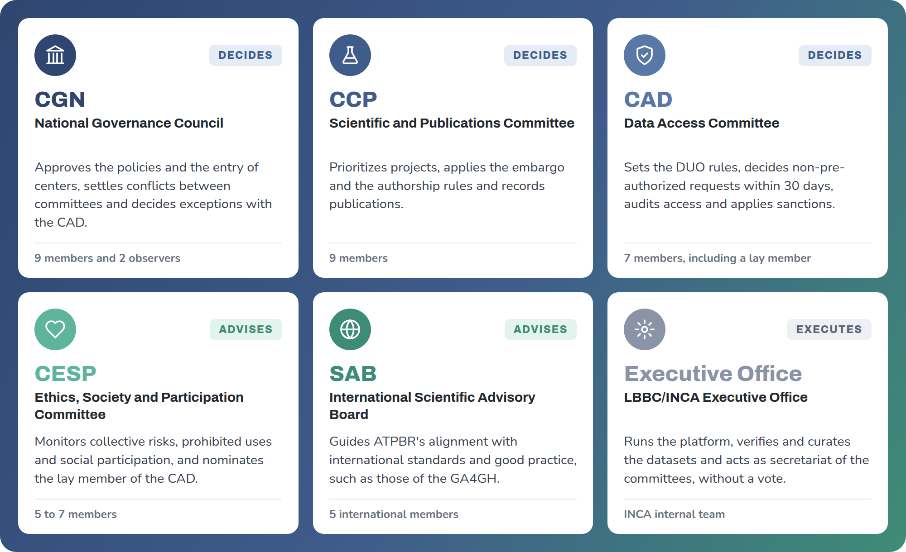
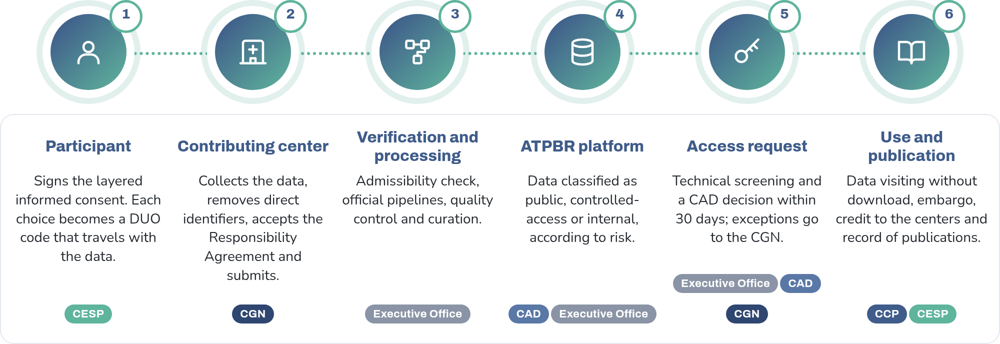

In Platform architecture, we saw the technical path that data follows in ATPBR. This chapter covers the rules that apply along that path: who is responsible for each step, which conditions a dataset must meet to enter the platform and be shared, and how research participants are protected.
Read this chapter before submitting data or requesting access to controlled-access data. The following chapters apply these rules to each situation: Data submission for those who send data, Data access for those who request access and Usage policies for those who receive the data.
ATPBR governance documents and instruments#
The governance of the Brazilian Population Tumor Atlas (ATPBR) rests on institutional policies, participant protection instruments and terms that formalize responsibilities. Together, they cover the entire data life cycle, from submission to reuse, in compliance with Brazilian law and international good practice. The Status column indicates whether each document is approved, under review or in preparation; documents that have not yet been approved must not be read as rules in force.
Institutional policies#
| Document | What it establishes | Intended for | Status |
|---|---|---|---|
| Data Governance Policy | General governance principles; the role of the Brazilian National Cancer Institute (INCA) as the coordinating and maintaining institution; governance bodies (CGN, CCP, CAD, CESP and SAB) and the responsibilities of participating institutions; constitution and management of the database; participant protection; information security and oversight mechanisms. | All institutions, researchers and professionals involved in ATPBR. | Under review. It will be published in full after approval. |
| Data Flow and Access Policy | Procedures for submitting, verifying, classifying and making data available; access modalities (public, registered, controlled through data visiting, and internal); criteria for requesting and authorizing access, including pre-authorization through DUO codes; duties of the Data Access Committee; monitoring and termination of granted access. | Submitting researchers, access requesters, the Data Access Committee and platform operators. | Under review. It will be published in full after approval. |
Data protection and participants' rights#
| Document | What it establishes | Intended for | Status |
|---|---|---|---|
| Personal Data Protection Impact Assessment (RIPD) | Identifies and assesses the risks, both individual and collective, of processing personal and sensitive data on the platform, and describes the security measures, safeguards and mechanisms adopted to prevent or mitigate them, in compliance with the LGPD (Brazilian General Data Protection Law). | Institutions responsible for processing the data, data protection officers, governance and information security teams and the competent supervisory authorities. | Under review. Internal document, because it contains information on risks and security controls; an institutional summary will be published. |
| Layered informed consent form (TCLE) template | Reference template that presents, in a clear and structured way, the purposes of collecting, storing, sharing and reusing the data in future research, with choices per layer (future use, international sharing, commercial use, recontact and return of findings) recorded as DUO codes. It is not a general authorization: each study must assess the compatibility between its consent, its ethics approval and the intended uses. | Researchers responsible for data collection, participating institutions, Research Ethics Committees and research participants. | In preparation. The template will be published; each study adopts the version approved by its Research Ethics Committee (CEP). |
Responsibility and sharing terms#
| Document | What it establishes | Intended for | Status |
|---|---|---|---|
| Institutional Agreement | Formalizes each institution's membership in the ATPBR consortium and the prior agreements required by CNS (National Health Council) Resolution No. 738/2024 for databases built with the participation of more than one institution: data contribution, access and sharing, responsibilities, participation in the collegiate bodies and credit to the centers. | Participating institutions and INCA. | In preparation. The template will be published. |
| Submitting Researcher's Responsibility Agreement | Declarations and responsibilities of those who submit data to ATPBR, accepted on the platform before the first submission: legitimacy of the submission, compliance with ethics approvals, compatibility with the applicable consents and authorizations, quality of the information and compliance with the platform's policies. | Researchers responsible for submitting data. | Under review. It will be published in full after approval. |
| Controlled-Access Data Use Agreement (DAA) | Conditions for using authorized data in the ATPBR secure instance, through data visiting and without download: approved purpose, confidentiality, prohibition of attempts at re-identification and of extraction of individual-level data, export of verified results only, security measures, incident reporting, processing costs where applicable and conditions for terminating access. | Researchers and institutions authorized to access controlled-access data. | In preparation. The template will be published. |
| Data Transfer Agreement (DTA) | Legal, institutional and technical conditions for sending data from the source institutions to ATPBR: authorized purposes, responsibilities, protection measures, use restrictions and storage and retention conditions. | Source institutions that contribute data, and INCA. | In preparation. The template will be published. |
The operating rules of the collegiate bodies are set out in their own bylaws, which are in preparation: the CAD Bylaws (composition, deadlines and appeals) and the CCP Bylaws (embargo period, authorship and credit to the centers).
Commitment to the responsible use of data#
ATPBR adopts a responsible access approach that takes into account the nature of the data, its conditions of use and the rights of research participants.
The use permissions of each dataset are classified with the Data Use Ontology (DUO) of the Global Alliance for Genomics and Health (GA4GH), which standardizes use restrictions and how they are interpreted in access requests. The DUO classification helps in reading the permissions, but it does not replace the verification of the consent and ethics approval of each study.
Data sharing complies with the ethics approvals, the applicable legal bases and the relevant institutional instruments, ensuring that each dataset is used exclusively within the authorized conditions. Controlled-access data are analyzed through data visiting, in the ATPBR secure instance, without download.
These documents follow the legislation and ethical standards applicable to research involving human participants, including:
- Brazilian General Data Protection Law (LGPD, Law No. 13.709/2018).
- Law No. 14.874/2024, which governs research involving human participants, and its implementing regulations.
- CNS Resolutions No. 466/2012 (research involving human participants), No. 340/2004 (human genetics) and No. 738/2024 (databases for research).
- CD/ANPD Resolution No. 19/2024 (international transfer of personal data), issued by the ANPD (Brazilian Data Protection Authority).
- INCA's Governance, Cybersecurity and Crisis Management Policies.
ATPBR's policies complement, but do not replace, the ethics approval of each research project, the consent forms and the agreements signed between the institutions. Approved documents are published in full in this documentation, so that they can be consulted before accepting the Responsibility Agreement or submitting an access request; internal documents, such as the RIPD, have a public summary. Questions can be sent to atpbr@inca.gov.br.
Principles#
Data management in ATPBR follows these principles, among others:
- Scientific purpose: data are used for legitimate, defined research objectives that are compatible with the conditions under which the data were obtained.
- Participant protection: respect for the dignity, autonomy, confidentiality and choices expressed by each participant, and prevention of collective risks, such as the stigmatization of population, ethnic, community or territorial groups.
- Necessity and proportionality: each use receives only the data appropriate to the authorized purpose.
- Ethical compliance: ethics approvals, consent forms and relevant ethics decisions are always observed.
- Quality and scientific integrity: data are kept intact, contextualized and traceable to their origin.
- Security and prevention: safeguards are proportional to the risks of improper access, re-identification and incompatible use.
- Segregation of duties: those who prepare, those who validate, those who decide and those who execute are distinct people or bodies.
- Accountability: decisions are recorded, so that the compliance of each operation can be demonstrated.
- Transparency and interoperability: the platform's rules are public, and the data follow standardized metadata, controlled vocabularies and identifiers.
Different authorizations that do not replace one another#
A single dataset may depend on several authorizations. Each has its own purpose, and none of them waives the others:
| Authorization | Who grants it | What it guarantees |
|---|---|---|
| Ethics approval | Research Ethics Committee (CEP) or National Research Ethics Commission (Conep) | That the research, whether the original study or a new one, is ethically compliant |
| Participant consent (or its waiver) | The participant; the waiver can only be granted by the competent ethics body | That the participant authorized the use of their data, under the conditions of the signed form |
| Consent of the provider institution | An authorized representative of the institution that provided the data | That the source institution agrees to that particular sharing |
| Access authorization | ATPBR Data Access Committee (CAD) | That a specific controlled-access request is compatible with the conditions of the dataset |
Two practical consequences:
- The ethics approval of the original study does not, by itself, authorize any new use or sharing of the data.
- Being accepted by the system is not the same as being admitted. Filling in the fields and uploading the files do not, by themselves, constitute authorization for incorporation, publication or scientific use.
Who's who#
The consortium's governance rests on six bodies with complementary roles: three decide, two advise and one executes.

| Participant | Main responsibilities |
|---|---|
| INCA: coordinating and maintaining institution | Developed ATPBR and maintains its infrastructure, operations and executive team (Executive Office/LBBC). Decisions on science, access and ethics are made by the consortium's collegiate bodies (CGN, CCP, CAD, CESP and SAB), in which the participating centers have a seat and a vote. For LGPD purposes, INCA acts as controller of the data processed on the platform, jointly with the participating centers, which remain controllers of the data they originate. |
| Source (provider) institutions | Ensure the compliance of collection and consent; remove direct identifiers and keep the linkage keys separately; report permissions and restrictions; communicate changes to and withdrawals of consent; cooperate in responding to participants and to incidents. For LGPD purposes, they remain controllers of the data they originate. |
| Submitting researchers | Prepare and send the data according to the platform's standards, provide the ethics documentation and the permissions of each dataset and accept the Submitting Researcher's Responsibility Agreement. |
| Executive Office and Operational Curation (LBBC/INCA) | Internal team that runs the operations: verifies the integrity, completeness, quality, provenance and ethics documentation of each dataset, records outstanding issues, runs the pipelines, curates data and metadata (including the DUO codes), supports the centers in submission, monitors and audits the access granted and acts as secretariat to the committees, without a vote. Reports to the CGN. |
| Technical and security teams | Implement the platform's controls: access profiles, authentication, encryption, audit logs, backups and vulnerability management. |
| National Governance Council (CGN) | Highest decision-making body, with 9 voting members and 2 observers (Decit/MS, the Department of Science and Technology of the Ministry of Health, and CNPq, the National Council for Scientific and Technological Development). Defines the strategy, approves the admission of centers and the general policies, resolves conflicts between the committees and decides, together with the CAD, exceptional cases such as commercial use and broad international transfer. |
| Scientific and Publications Committee (CCP) | Decision-making, with 9 members. Evaluates analysis proposals, defines priority projects, avoids overlap between groups, applies the embargo and authorship rules and registers manuscripts and presentations. |
| Data Access Committee (CAD) | Decision-making, with 7 members, including a lay member nominated by the CESP and a representative of the National Tumor Bank (BNT), who links the committee with the BNT and with the clinicopathological data. Defines the compatibility rules for DUO codes, decides controlled-access requests that are not pre-authorized within 30 days and may suspend or revoke access in case of non-compliance. |
| Ethics, Society and Participation Committee (CESP) | Advisory, with 5 to 7 members, including representatives of patients and of ethnic and racial minorities. Monitors collective risks, prohibited uses and social participation, and nominates the lay member of the CAD. |
| International Scientific Advisory Board (SAB) | Advisory, with 5 international members. Guides the alignment of ATPBR with international standards and good practice, such as those of the GA4GH. |
| Recipient researchers and institutions | Use the data only for the authorized purpose, maintain confidentiality and security, do not attempt to re-identify participants and comply with the signed use instrument; respect embargo periods and cite ATPBR and the source centers. |
The roles are performed by people formally designated by INCA, with defined substitutes, and organized in a responsibility matrix that separates who provides the data, who verifies them, who decides on their incorporation or release and who executes and oversees. Members of the collegiate bodies serve 2-year terms, renewable once, declare conflicts of interest every year and for each agenda, and whoever submits a dataset does not vote on it. No member holds a seat on the CCP and the CAD at the same time, and there are no seats for companies.
The data path and who acts at each step#

The tags below each step indicate the bodies that act on it.
Participant protection#
The data received by ATPBR do not include direct identifying information about participants.
Each participant and sample receives a code, which makes it possible to integrate clinical and genomic information without directly identifying people. The linkage between codes and identities is protected and remains exclusively under the responsibility of the source institution.
All data are treated as sensitive personal information, in accordance with the General Data Protection Law (LGPD), with access controls and additional safeguards for genetic data.
Data protection rules#
Before sending data to ATPBR, all institutions follow standardized rules:
- Removal of personal identifiers (name, CPF (Brazilian individual taxpayer number), National Health Card number, RG (identity card number), medical record number, registration number, address, telephone and email).
- Use of the patient and sample codes defined by ATPBR (see Identification and barcode system).
- Replacement of clinical event dates with the number of days from diagnosis (see Data dictionary).
- Checking of free-text fields, file names, headers and technical metadata, where identifiers often appear unnoticed.
Life cycle of a dataset#
| Step | What happens |
|---|---|
| 1. Registration and upload | The submitting researcher accepts the Responsibility Agreement, registers the Project, Investigation, Study, Patients, Samples, Assay, Files and Experiments, and provides the ethics documentation and the use permissions (see Data submission). |
| 2. Admissibility check | Three distinct and complementary checks: (i) automated, of required fields, structure and vocabularies; (ii) technical, of integrity, consistency and correspondence between patients, samples, experiments and files; and (iii) ethics and documentation, of ethics opinions, consent and source permissions. |
| 3. Validation result | The validation team records the dataset as eligible, pending completion or not admitted, with the reasoning and the person responsible for the decision. |
| 4. Processing and curation | Eligible data are processed by the Analysis platform. Provenance is preserved, and source restrictions carry over to derived data. |
| 5. Classification and release | Each item is classified as public, controlled-access or internal, and anything public undergoes a re-identification risk assessment before release (see Data access). Before opening, the dataset may be subject to an embargo period (publication moratorium), during which first publication is reserved for the original project; the embargo and authorship rules are applied by the Scientific and Publications Committee (CCP). |
| 6. Controlled access | Researchers request access, and the CAD decides case by case (see Data access). |
| 7. Retention and disposal | The need to retain data and documents is reviewed periodically, according to the scientific purposes, the legal and ethical obligations and the source conditions. |
Pending or not admitted datasets remain blocked: they are not visible to third parties, are not published and cannot be used in new research until they are brought into compliance. Relevant changes after validation, such as a new document, a new restriction or new patients, trigger a new verification of the dataset.
Ethics documentation and permissions of each dataset#
Each dataset is linked to the documents proving that it may enter the platform and be used. This set of records forms the dataset's dossier.
| Level | What is reported and checked |
|---|---|
| Project | Title, scientific lead, participating institutions and ethics approval, with the supporting documents, their version and their validity |
| Study | Relevant ethics opinion, cohort characteristics, conditions for display in the catalog and study restrictions |
| Patients and Samples | Consent type, use permissions and restrictions, and identification codes |
| Assay, Experiments and Files | The conditions of use carry over to the data produced |
The expected documents include the CEP or Conep opinion, the version of the informed consent form (TCLE) used (or the consent waiver decision), the data transfer agreement (DTA) and the record of use permissions. A filled-in field without the corresponding document does not meet the proof requirement.
The permissions recorded at each level (Study, Patient, Sample, Assay and File) are considered together. The most protective restriction always prevails, and a discrepancy between levels, for example a study released for general use with a patient who refused future use, prevents release until it is resolved and documented.
Permissions and restrictions follow the GA4GH Data Use Ontology (DUO), which standardizes conditions such as general research use (GRU), health/medical/biomedical research (HMB), disease-specific research (DS), non-commercial use only (NCU), ethics approval required (IRB), collaboration with the provider researcher required (COL), geographic restriction (GS) and publication moratorium (MOR).
Future use of data#
Using the data in new research requires respecting the conditions of the original study and the choices of each participant:
| Status of the original consent | What is required |
|---|---|
| Future use was authorized | The new research may use the data under the authorized conditions, with its own ethics review |
| Future use was not foreseen | New consent or a waiver granted by the competent ethics body |
| Future use was expressly refused | Only with new consent from the participant or their legal representative |
The CAD does not grant consent waivers: that power lies exclusively with the ethics body.
Data access and the Data Access Committee#
What is public, what is controlled-access and what is for internal use, as well as the steps of a controlled-access request and how the CAD decides, are described in Data access. Two points apply in all cases:
- Working on software development or infrastructure maintenance does not grant access to research data. Internal permissions follow a profile matrix and the principle of least privilege.
- The CAD, whose composition is described in Who's who, meets monthly, and its members do not take part in deliberations from which they are disqualified. Quorum and other rules are set out in the CAD Bylaws.
Biological samples (outside the scope of ATPBR)#
ATPBR manages data only. The governance of biological samples (collection, storage, access, use and transfer) is the responsibility of INCA's National Tumor Bank (BNT) and of the institutions that hold them, and is not regulated by ATPBR's policies; the same applies to instruments concerning samples, such as the Material Transfer Agreement (MTA). Authorization to access data does not include access to the corresponding samples.
The permissions and restrictions that apply to a sample continue to apply to the data produced from it.
Participants' rights and consent withdrawal#
Participants exercise their rights (access, correction, restriction and withdrawal of their data) through the source institution, which holds the linkage keys. Requests are handled in coordination with INCA's data protection officer, and the platform locates the records by their codes, without needing to receive the participant's name or identity document.
When there is a consent withdrawal, a new restriction or another request from the participant:
- the affected datasets are identified by their source codes;
- new incompatible uses are blocked;
- researchers who have already received the data are notified, when necessary;
- the measures taken are documented, subject to the cases of retention provided for by law.
The source institution and the submitting researcher must promptly notify ATPBR of any change affecting the submitted data, such as a change in the ethics opinion, consent withdrawal, a new restriction or a security incident.
Security, incidents and traceability#
The platform follows the INCA Cybersecurity Policy, with additional controls proportional to its risks: profile management, access limited to what each role needs, strong authentication for privileged access, encryption, backups and business continuity.
Records are kept of requests, decisions, consents, enablements, accesses, downloads, suspensions, revocations and terminations, protected against improper alteration. These records make it possible to reconstruct who accessed which dataset, when and on the basis of which authorization.
Security incidents are handled through INCA's privacy and security procedures, with the participation of the ATPBR team and the cooperation of the source institutions. Researchers who suspect an incident, re-identification or misuse must notify INCA immediately.
The risks of the platform's operations are assessed in ATPBR's Personal Data Protection Impact Assessment (RIPD).
Monitoring and review#
ATPBR's coordination tracks indicators on the compliance of datasets, release decisions, participant requests, incidents and corrective measures.
Relevant changes to the platform architecture, data categories, access features, participating institutions or conditions of use trigger an assessment of the impact on governance, the ethics protocol, the legal instruments and the security controls.
Controls are implemented progressively, but each operation starts only after the controls it requires are in place. For this reason, public release and controlled access are enabled only after their respective procedures have been completed.
Next chapter → Data submission: how to register a project and submit your data, applying the rules in this chapter.